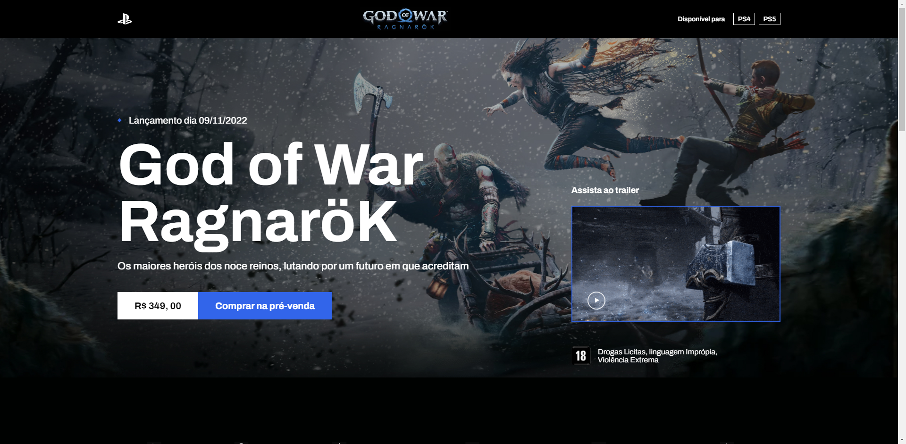
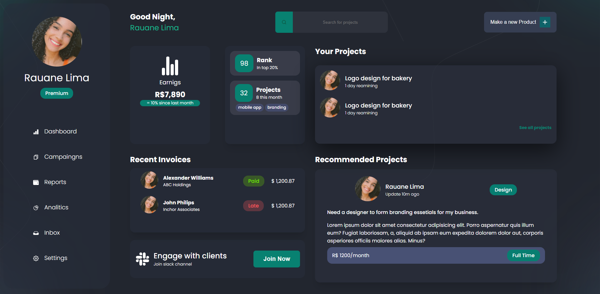
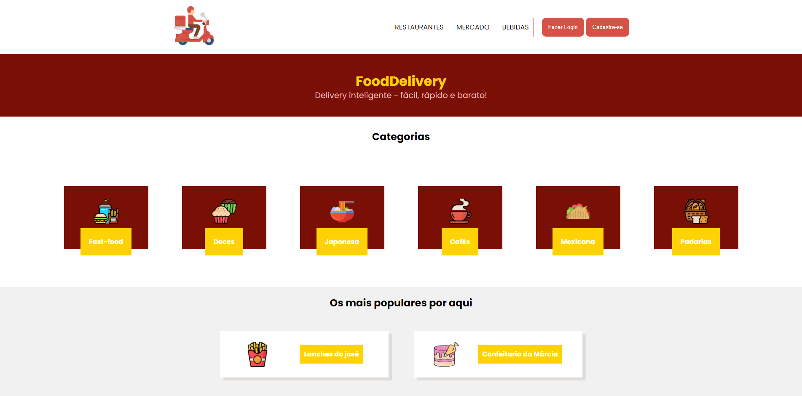
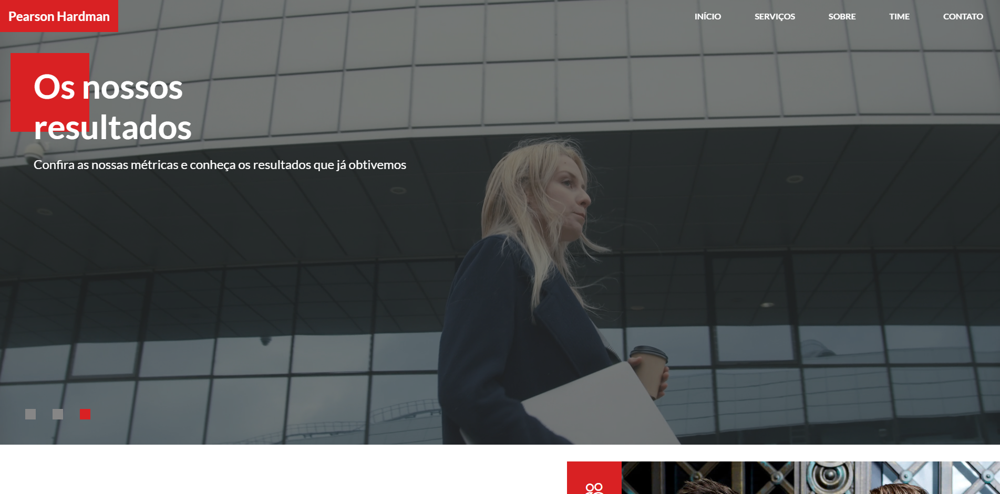
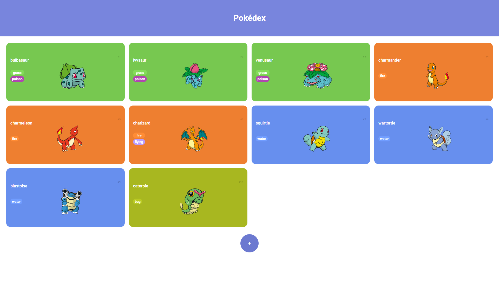
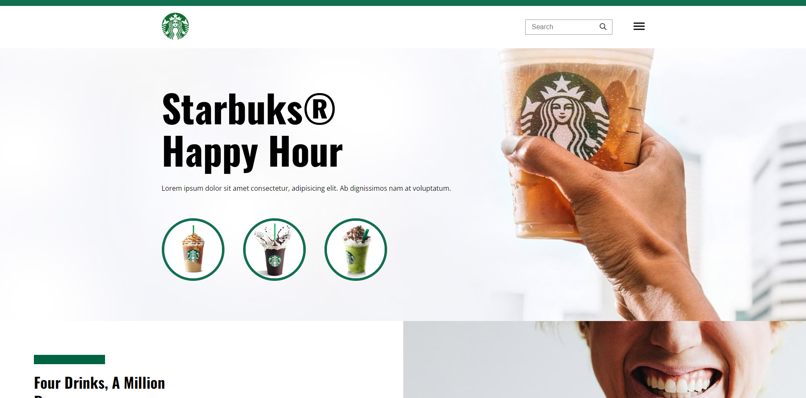

God Of War Ragnarok
O Fimbulwinser já começou. Kratos e Atreus devem viajar pelos Nove Reinos em busca de respostas enquanto
as forças asgardians se preparam para uma batalha profetizada que causará o fim do mundo.

Dashboard
utilizei o styled-components em questão de organização e aproveitei para explorar o ReactJS, foi
desafiador entendê-los. A ideia desse Dashboard no início era criar algo organizado para questões de
desempenho para um determinado objetivo ou processo de negócios (ainda irei evoluir).

Food Delivery
Projeto de um site delivery dinâmico onde o cliente pode
escolher pelos melhores restaurantes e os melhores serviços
com o sistema de classificação e de qualidade dos serviços.

Clima Agora!
Uma Aplicação de Clima com OpenWeather API, um Projeto
de JavaScript com API para trazer dados climáticos de
cidades. um projeto importante para aprender coisas sobre integrações e
manipulações de uma API.

Person Hardman
Landing page de uma empresa de advocacia com os personagens da série Suits, mostrando todo o trabalho de
um escritório de advogados que resolvem soluções diariamentes para empresas e pessoas, demostrando suas
maiores responsabilidades.

MemoryGame
Jogo da memória com tema do Rick and Morty feito com HTML,
CSS e JavaScript.

Pokédex
Projeto de uma pokedex com Protocolo HTTP e Integrando com PokeAPI, onde,os dados dessa API se
tranformaram numa interface de lista para a primeira geração de pokemons.

Página de tributo
Estava vendo vídeos sobre o Stephen (sou uma grande fã dele
e do que ele fez pela ciência) e surgiu uma ideia, por que
não fazer uma página de tributos sobre a vida e os grandes
feitos do Hawking? Contando um pouco dessa historia, dessa
pessoa que admiro tanto. O projeto contém livros e vários
conteúdos interessantes.

Página de receitas
Uma página feita para treinar meus conceitos de HTML5 e
CSS3, como num código, as receitas precisam de algoritmos,
sequencias de passos estruturados para se fazer algo, então
utilizando esses conhecimentos, surgiu o queroReceitas.

Awax
Uma landing page desenvolvida com o layout disponibilizado
durante o curso de HTML5 e CSS3 da b7web. Pude praticar
posicionamento utilizando na maior parte o display: flex no
projeto.

RocketBolg
Construi uma Aplicação de Blog com protótipo do FIGMA. A ideia era uma página para falar sobre
tecnologias de todos os segmentos da área.

Starbucks
Um clone do site da Starbucks feita para praticar Flexbox e
Grid, exercicios proposto pela b7Web para treinar o bom CSS3
e HTML5.

Projeto poesia
Esse projeto foi feito com a conclusão de ser retirado o
máximo de conhecimento sobre a propiedade de imagens de
fundo. O projeto inicial era um cordel, como eu já criava
poesisa resolvi modificar para um projeto meu.

Veterinário
página estática de uma veterinário com HTML5 e CSS3 contendo
informações sobre tal empresa.